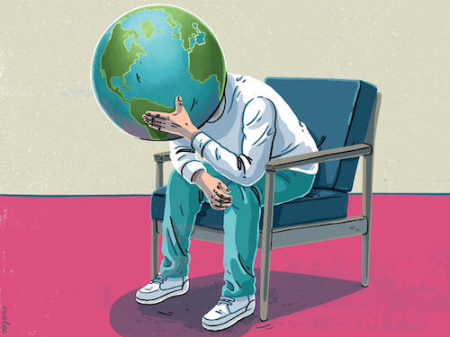
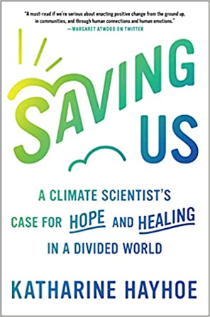
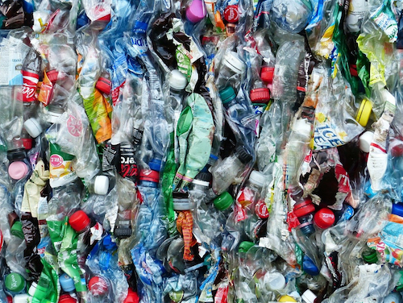

Upcoming Events
- Our next meeting will be Monday, December 6 at 7 p.m. We will have Brett Walter, the developer of the Climate Action Now App joining us. Check back soon for the link!
- CRP Finger Lakes Book Club Facebook group will be reading “The Future We Choose: Surviving the Climate Crisis,” by Christiana Figueres and Tom Rivett-Carnac. The authors present our options and tells us what governments, corporations, and each of us can, and must, do to fend off disaster. Discussion is scheduled for Monday, December 13 at 7 PM. Check back soon for the link!
- Our first meeting of the new year will be held January 3, 2022!
Past Events
-
Click here to view our October 2021 meeting. Topic: Government inaction on climate change and its impact on young adults: a recent survey of 10,000 youth from 10 countries. Jennifer Fendya, PhD, CRP-WNY/Climate Psychology Alliance, presented a brief summary of the soon-to-be-published 2021 findings of the international Eco-Anxiety and Climate Emergency Research Group and lead our discussion of how they can inform our advocacy for meaningful climate solutions.

-
Finger Lakes Book Club Meeting October, 25 2021. We read "Saving Us" by Katharine Hayhoe.

-
Finger Lakes meeting was held Thursday Oct. 14 at 7 p.m. Topic: The Plastic Problem.
